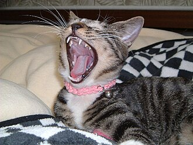

Рабочая записка
План, варианты, риски и нюансы скрининга хронического стресса за последние 1–3 месяца для руководителя, который полгода находится в Бразилии.
Точную инструкцию даст лаборатория. Ниже — стандартные правила, которых придерживаются ведущие лаборатории.

| Риск | Уровень | Суть | Что делать |
|---|---|---|---|
| Нет лаборатории | Высокий | В Бразилии анализ коммерчески не предлагается. Feevale может отказать частному лицу. | Параллельно запрашивать Feevale и лабораторию в Рио. |
| Экспорт биоматериала | Высокий | Для самостоятельной отправки за рубеж нужны согласие ANVISA, курьер и компания-посредник. Обычная почта не принимает биоматериал от частных лиц. | Выбирать варианты без самостоятельного экспорта (Feevale или лаборатория в Рио). |
| Зарубежный партнёр | Средний | При отправке через бразильскую лабораторию партнёр должен быть официально зарегистрирован. Исследовательская лаборатория (например, Дрезден) может не подойти. | Работать с партнёром, которого предложит сама лаборатория. |
| Направление врача | Средний | В Бразилии анализы на кортизол обычно назначает врач. | Заранее получить pedido médico. |
| Сроки | Средний | Сроки ответа лабораторий и согласования ANVISA неизвестны. | Начать переписку сразу; образец брать после согласования маршрута. |
| Стоимость | Средний | Цена не опубликована. Бразильская медстраховка не обязана оплачивать анализы, сделанные за рубежом. | Запросить полную стоимость (анализ + доставка + сборы) до старта. |
| Солнце, мытьё, окрашивание | Средний | УФ-излучение, частое мытьё шампунем и окрашивание снижают кортизол в волосах. В Бразилии это особенно актуально. | Брать прядь у корня с затылка, сообщать лаборатории об окрашивании. |
| Лекарства | Средний | Кортикостероиды (кремы, ингаляторы, таблетки, уколы) искажают результат. | Указать все препараты при сдаче. |
| Длина волос | Низкий | Нужно минимум 1–3 см у корня. При очень короткой стрижке анализ невозможен. | Не стричься коротко перед сдачей. |
| Хранение образца | Низкий | Кортизол в волосах постепенно снижается при долгом хранении. | Отправлять в течение нескольких недель после среза. |
| Интерпретация | Низкий | Это скрининг, а не диагноз. Референсы у лабораторий разные. | Повторять в одной лаборатории; обсуждать результат с врачом. |
Это крайний вариант. Его стоит рассматривать, только если ни Feevale, ни лаборатории в Рио не помогли.